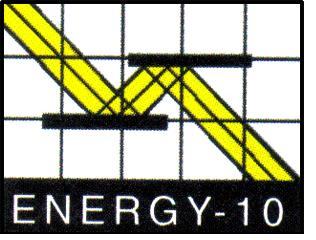

Green Gazette
During the 1970s energy crisis, many designers and builders plunged into passive solar home construction. Most soon found that passive solar design is simple in concept, but a challenge in reality. Even small errors in design spawned major problems,such as overheating or freezing at night.
Today barriers to passive solar design are falling, thanks in part to sophisticated building software like Energy-10 from the Sustainable Buildings Industry Council in Washington, D.C.
Energy-10 allows architects, contractors and owner-builders to analyze passive-solar designs for energy performance at any stage of development. It also permits them to fine-tune their building designs to eke out additional energy savings and increase comfort levels. Perhaps the best feature allows the creation of region-specific building designs to help ensure optimal performance and comfort in a wide variety of climates.
As the simplest alternative energy system, a passive solar structure relies on south-facing glass, hefty insulation and thermal mass to capture and retain the sun's energy. A well-built solar home can slash heating bills by 25 percent to 80 percent.
Early passive solar designs sometimes failed to live up to expectations because the interactions between the solar home, climate and site are so complex. But Energy-10 software performs complicated calculations with click-of-the-button simplicity, including ranking energysaving features and determining the necessary size of backup heating and cool ing systems.
Energy-10 does have weaknesses. I found the building options, especially roof systems, limited. Natural builders will need to customize the program a bit to use it successfully. The regional design feature lacks some solar radiation data.
The complete package sells for $250, but the Council is offering a generous $50 discount for Mother Earth News readers who provide the code MEM-02 with their order. The $200 package includes Designing Low-Energy Buildings, a well-written introduction to passive solar design and use of the software.
-Dan Chiras
For more information, contact: Sustainable Buildings Industry Council, 1331 H St., NW, Suite 1000, Washington, D.C. 20005-4706; (202) 628-7400;
|
 |
|
|